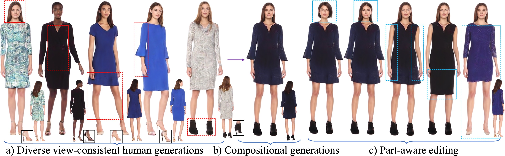

TL;DR: StructLDM is a new paradigm (vs. existing 3D GAN) for 3D human generation from 2D image collections. We propose an structured auto-decoder to auto-decode human images/videos in different poses and from various camera viewpoints into a unified UV-aligned space, where we learn a structured latent diffusion model for 3D human generation.
StructLDM generates diverse view-consistent humans, and supports different levels of controllable generation and editing, such as compositional generations by blending the five selected parts from a), and part-aware editing such as identity swapping, local clothing editing, 3D virtual try-on, etc. Note that the generations and editing are clothing-agnostic without clothing types or masks conditioning.
Recent 3D human generative models have achieved remarkable progress by learning 3D-aware GANs from 2D images. However, existing 3D human generative methods model humans in a compact 1D latent space, ignoring the articulated structure and semantics of human body topology. In this paper, we explore more expressive and higher-dimensional latent space for 3D human modeling and propose StructLDM, a diffusion-based unconditional 3D human generative model that is learned from 2D images. StructLDM solves the challenges imposed due to the high-dimensional growth of latent space with three key designs: 1) A semantic structured latent space defined on the dense surface manifold of a statistical human body template. 2) A structured 3D-aware auto-decoder that factorizes the global latent space into several semantic body parts parameterized by a set of conditional structured local NeRFs anchored to the body template, which embeds the properties learned from the 2D training data and can be decoded to render view-consistent humans under different poses and clothing styles. 3) A structured latent diffusion model for generative human appearance sampling. Extensive experiments validate StructLDM's state-of-the-art generation performance and illustrate the expressiveness of the structured latent space over the well-adopted 1D latent space. Notably, StructLDM enables different levels of controllable 3D human generation and editing, including pose/view/shape control, and high-level tasks including compositional generations, part-aware clothing editing, 3D virtual try-on, etc.
StructLDM enables compositional 3D human generation and part-aware editing. Taking six body parts from a), coherent composition and blending results can be achieved in b). Using the Diff-Render procedure, part-aware editing enables lots of downstream tasks in c).
This study is supported by the Ministry of Education, Singapore, under its MOE AcRF Tier 2 (MOE-T2EP20221-0012), NTU NAP, and under the RIE2020 Industry Alignment Fund – Industry Collaboration Projects (IAF-ICP) Funding Initiative, as well as cash and in-kind contribution from the industry partner(s).
@misc{hu2024structldm,
title={StructLDM: Structured Latent Diffusion for 3D Human Generation},
author={Tao Hu and Fangzhou Hong and Ziwei Liu},
year={2024},
eprint={2404.01241},
archivePrefix={arXiv},
primaryClass={cs.CV}
}